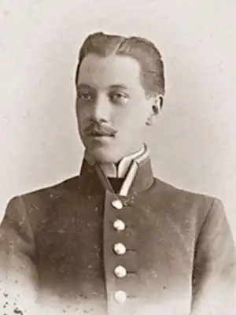

(15.04.1886 — 26.08.1921)
Російський поет, літературний критик і перекладач Микола Степанович Гумільов народився 3 квітня 1886 року в місті Кронштадті. Батько його – Степан Якович, морський лікар, мати – Ганна Іванівна.
У восьмирічному віці хлопчика віддають на навчання в Царскосельскую гімназію, однак через хворобу він залишає її. Коли сім'я переїхала в Петербург (1895), юнак вступив до гімназії Гуревича. У 1900 р. батьки їдуть жити в Тифліс, Микола надходить в 2-гу міську гімназію, потім переводиться в 1-ю чоловічу гімназію. В Тифлісі було опубліковано перший вірш Гумільова. Після повернення сім'ї в Царське Село, сімнадцятирічний юнак повторно вступає до гімназії. Через погану навчання його просто могли виключити з навчального закладу, однак врятували поетичні здібності: директор В. Анненський, враховуючи їх, запропонував залишити Миколая на другий рік. Незабаром молодий поет за свої кошти видає збірку "Шлях конквистадоров', на який Ст. Брюсов написав критичну рецензію, закінчивши її, однак, на оптимістичній ноті віри в потенційні можливості автора. Після цього у літераторів виникає листування, Брюсов протегує Миколі, ставиться до неї по-батьківськи тепло. Саме в цей період сформувалися літературні смаки молодого письменника – під впливом В. Анненського, символістів і творів Ф. Ніцше. А інтерес юнака до Бальмонту визначив экзотизм його світовідчуття і стійку романтичну спрямованість усієї творчості. Закінчивши гімназію, 19-річний поет їде в Париж. У Сорбонні відвідує лекції з французької літератури, цікавиться театром, живописом. Випускає 3 номери литжурнала ‘Сіріус", в якому поміщає перший вірш своєї коханої Анни Горенко, потім за особисті кошти публікує поетичну книгу "Романтичні квіти", присвятивши його коханої. На гроші від продажу збірки літератор відправляється в подорож по Єгипту, де збирає матеріали з етнографії, изоискусству, народні пісні. Згодом їздив до Африки ще тричі – в 1909, 1910 і 1913 рр .. Повернувшись до Петербурга, Гумільов навчається на юридичному факультеті університету, обертається в поетичній середовищі, знайомиться з Вяч. В. Івановим. Разом з С. Маковським створює журнал "Аполлон', веде в ньому літературно-критичну сторінку "Листи про російської поезії'. Брюсов зазначав проникливість критики Гумільова, вміння давати короткі і ємні характеристики творчості колег. Вийшла в 1910 р. поетичну книгу "Перлів' похвалили В. Анненський, В. Іванов, В. Брюсов, однак вважали її ще учнівської. У квітні Микола Степанович вінчається з Анною Горенко (майбутньої Ахматової). Гумільов не любив блоковскую розпливчастість, протиставляв їй свою творчість і бажав виробити власне поетичне кредо. Це було однією з причин організації ‘Цеху поетів' (1911), до якого приєдналися А. Ахматова, О. Мандельштам, С. Городецький, Ст. Нарбут, М. Зенкевіч та ін. Поезію молоді люди стали називати ремеслом, а поети були розділені на дві частини: підмайстра та майстра. До майстрів (‘синдикам') відносили Гумільова і Городецького. Відчуваючи криза символізму, учасники шукали йому альтернативу, хоча спочатку конкретної літературної спрямованості в ‘Цеху' не існувало. Однак незабаром ‘царськосельський Кіплінг' заявив про народження акмеїзму – напряму, який стверджував матеріальність образу, точність слова, тематичну предметність (1912). Символізм визнавався його предтечею, але був відкинутий як віджилий свій вік. З'являються цеховское видавництво ‘Гиперборей' і однойменний журнал. Поет вступає до університету на історико-філологічний факультет, студіює старофранцузскую поезію. Видає нову збірку поезії ‘Чуже небо', де публікує своє перше акмеистическое твір – поему ‘Блудний син'. Критика її хвалила, говорячи про майстерному володінні формою, а Брюсов в цілому у віршах поета зазначав перевага форми над змістом. В цей же час у Гумільова і Ахматової народився син Лев. Літератор пише статтю "Спадщина символізму і акмеїзм' (1913 р.), в якій проводить порівняльний аналіз двох літературних течій, позначаючи ознаки нового. Потім їде в Абіссінію в чергову експедицію. Безрадісним виявилося початок 1914 року: ‘Цех поетів' припинив існування, у його екс-керівника виникли проблеми у стосунках з дружиною. У Першу світову Гумільов вступає добровольцем в армію, служить в уланському полку, де нагороджується Георгіївським хрестом, потім б'ється на Волині, отримує другий хрест. Випускає збірник ‘Сагайдак' з військовою тематикою, потім з'являються драматичні твори розповідного характеру – казка ‘Дитя Аллаха' і поема ‘Гондла'. В російський експедиційний корпус у Франції Микола Степанович відправляється в 1917 р. На деякий час затримується в Лондоні, там знайомиться з письменником Р. Честертоном, поетом У. Батлером. У Парижі служить ад'ютантом, заводить дружні стосунки з художниками М. Гончарової, М. Ларіоновим. Закохавшись у доньку лікаря Олену дю-Буше, присвячує їй нову книгу віршів "До синьої зірці'. Після повернення в Росію видає збірник ‘Ватра', пише африканську поему ‘Мік' (1918). У серпні розлучається з А. Ахматової, а на наступний рік вступає в шлюб з Анною Енгельгардт. Бере участь у роботі Всеросійського союзу поетів, на запрошення Горького працює у видавництві ‘Всесвітня література'. Одночасно викладає в літстудії, проводить лекції в інститутах, робить поетичні переклади з французької, англійської та стародавнього (‘Епос про Гільгамеша'). Створює п'єси ‘Дерево перетворень', ‘Краса Морни', ‘Полювання на носорога'. Останні місяці життя поета ознаменувалися виходом двох збірок: ‘Намет' і ‘Вогненний стовп'. ‘Намет' автор хотів зробити ‘підручником географії у віршах'. В ‘Вогненний стовп', присвячений другій дружині, увійшли знакові ‘Слово', ‘Мої читачі', ‘Шосте відчуття'. Багато дослідників цю книгу вважають найкращою у творчому доробку поета. Вяч. Ст. Іванов писав, що ‘Вогненний стовп' і безпосередньо примикають […] до цієї збірки вірші незмірно вище всього попереднього', а доля автора схожа на вибух зірки, що яскраво спалахнула перед своїм зникненням. З весни Микола Степанович веде студію ‘Звучить раковина', передає досвід молоді, читає лекції про поетиці. Літератор і мандрівник, відважний воїн, Гумільов завжди чесно заявляв про своїх релігійних і політичних переконаннях, навіть за радянської влади. При вигляді храмів хрестився, а одного разу на запитання із залу відповів, що за своїм соціальним світоглядом є монархістом. Підозрюючи поета в участі в ‘таганцевском змові', у серпні 1921 р. його заарештовують. Залучений в цю справу він був мінімально – лише пообіцяв учасникам сприяти в разі їх виступи проти уряду. Однак цього виявилося досить, щоб 24 числа його засудили до розстрілу, а на наступну добу вирок виконали. Місце страти і захоронення невідомо донині. Н. С. Гумільов був людиною різнобічних обдарувань. Як військовий зробив багато сміливих вчинків, що викликали захоплення ближніх. Будучи видатним дослідником Африки, зібрав багату колекцію матеріалів з етнографії та антропології, яка зберігається зараз в Кунсткамері. А головне – створив твори, що відобразили одвічні питання буття: життя і смерті, вдосконалення духу особистості, її зв'язки з минулим і справжнім. У них і сьогодні він оспівує міць розуму і духовну силу, стверджує індивідуальну неповторність і цінність кожної людини, словом співчуття намагається підбадьорити живуть на ‘рідний, дивної землі', культивує в читача оптимізм і віру в себе. Справді, поезія Гумільова для багатьох – біблійний ‘вогненний стовп', який веде їх по життю і підтримує в дорозі Словом.